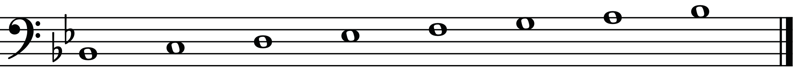
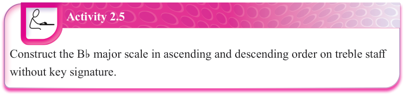

Figure 2.24: The B♭ major scale with a key signature
Activity 2.5

Construct the B♭ major scale in ascending and descending order on treble staff without key signature.
E♭ major scale
When constructing the E♭ major scale, you can arrange a series of eight notes starting from the first note, which is E♭. This can be done while following the pattern for constructing major scales, which is T-T-S-T-T-T-S. The following are steps that can be followed when constructing the E♭ major scale:
(a) Step 1: Write a series of eight notes from note E♭.
E♭-F-G-A-B-C-D-E♭
(b) Step 2: Count the steps between the notes while following the pattern T-T-S-T-T-T-S as follows:
(i) From note E♭ to F = Tone (T)
(ii) From note F to G = Tone (T)
(iii) From note G to A = Tone; however, since the pattern for major scales requires you to count a half step or semitone (S), you have to decrease the distance between note G and A.
This can be done by lowering note A using a flat (♭) sign to get a half step or semitone.
Therefore, you will count from note G to A♭ = Semitone (S).
(iv) From note A♭ to B = One and a half step; however, since the pattern for major scales requires you to count a whole step or tone (T), you have to decrease the distance between note A♭ and B.
This can be done by lowering note B using a flat (♭) sign to get a whole step or tone.
Therefore, you will count from note A♭ to B♭ = Tone (T).
(v) From note B♭ to C = Tone (T)